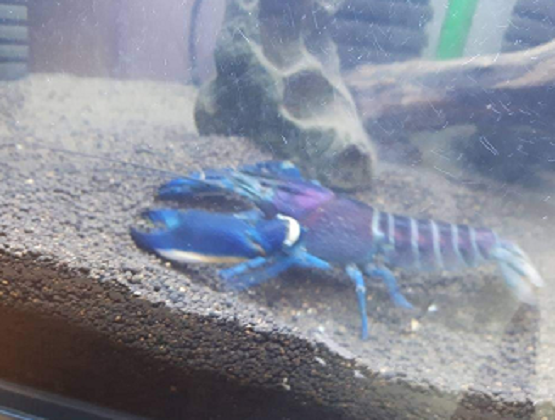

Ornamental fish information sharing
Menu
Home
Advanced ornamental fish information.
Advanced Ornamental fish difficulty
고급 관상어 종류
디스커스
목: 시클리드목
먹이: 햄벅, 실지렁이, 사료
온도: 최대 27~8°C
여과기: 없음
특징
관상,상품목적이 강한 어종이다.
보여지는것을 중요시하기 때문에 위 아래로 넓게 둥근체형을
만들기 위해 엄청난 먹이를 공급해야 한다.
많은 먹이량과 기름기가 많은 먹이종류를 먹이기 때문에 물이
금방 더러워져 잦은 환수가 필요하다.
성장이 8개월이 지난 후 산란이 가능하며 암컷은 한번 산란을
하면 더 이상 자라지 않는다.
알을 낳고 1주일 뒤 새끼들은 암컷 몸에 체착을 할 때 환수를 멈추고 체착 후 3일이 지나면 환수를 해주어야 한다.
아로와나
목: 골린어목
먹이: 오징어귀채, 생미, 냉미(냉동미꾸라지)
온도: 25°C
여과기: 상면여과기,섬프
특징
4자이상 수조에서 사육해야하는 대형어이다.
보통 10~20급 정도 사이즈가 흔하고 50급이 넘어가는 개체는 가정집에서는 보기 힘들다.
아시아 아로와나의 경우 고가로 거래가 되고있으며 혈통서도 존재한다.
대형어인 만큼 먹이 수요가 많으며 더불어 배설도 많아진다.
질병에 취약하다.
스탠다드블루얍비
종: 체락스(계열이며 약간 변형 됨)
먹이: 잡식(조미료 및 앙념 제외)
온도: 22°C~24°C
여과기: 상면여과기,스펀지여과기
특징
어린 개체에서는 하늘색 발색을 띄지만 점차 성장하며 파란색 발색을 유지한다.
노멀얍비에 비해 힘이 약하다.
첫 포란시 100개의 알을, 경험이 있는 개체는 300~400개의 알을 포란한다.
성격이 사나우며 번식기 이외의 기간에는 동족포식이 빈번하게 일어난다.

체락스 플케르
종: 파푸아
먹이: 잡식(조미료 및 앙념 제외)
온도: 24°C~26°C
여과기: 상면여과기,스펀지여과기
특징
빛에 민감해서 모습을 거의 드러내지 않는다.
집게발 비율이 집게 끝 부분이 짧다.
등갑과 꼬리쪽에 붉은 발색을 보이고, 집게발은 파란 발색을 보인다.
성격이 예민하고 스트레스를 많이 받으며 조그마한 환경의 변화에도 놀라 쉽게 죽으며 키우기 까다로운 종이다.
위 관상어 외에 더 궁금하신 정보에 대해서 아래 메일 중 하나에 질문 주시면 업데이트 해드리겠습니다.